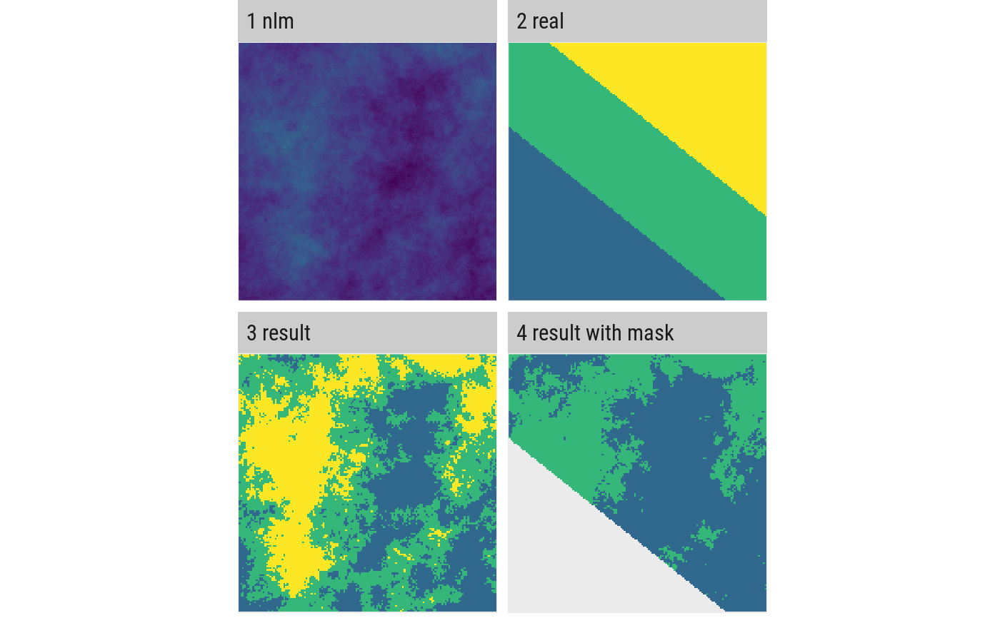

util_classify.RdClassify a raster into proportions based upon a vector of class weightings.
util_classify(x, n, style = "fisher", weighting = NULL, level_names = NULL, real_land = NULL, mask_val = NULL)
| x | raster |
|---|---|
| n | Number of classes |
| style | Style of breaks (see classInt::classInvervals() for more details) |
| weighting | Vector of numeric values that are considered to be habitat percentages (see details) |
| level_names | Vector of names for the factor levels. |
| real_land | Raster with real landscape (see details) |
| mask_val | Value to mask (refers to real_land) |
RasterLayer
The number of elements in the weighting vector determines the number of classes in the resulting matrix. The classes start with the value 0. If non-numerical levels are required, the user can specify a vector to turn the numerical factors into other data types, for example into character strings (i.e. class labels). If the numerical vector of weightings does not sum up to 1, the sum of the weightings is divided by the number of elements in the weightings vector and this is then used for the classification.
For a given 'real' landscape the number of classes and the weightings are extracted and used to classify the given nlm landscape (any given weighting parameter is overwritten in this case!). If an optional mask value is given the corresponding class from the 'real' landscape is cut from the nlm landscape beforehand.
# Mode 1 util_classify(fbmmap, n = 3, style = "fisher", level_names = c("Land Use 1", "Land Use 2", "Land Use 3"))#> class : RasterLayer #> dimensions : 150, 150, 22500 (nrow, ncol, ncell) #> resolution : 1, 1 (x, y) #> extent : 0, 150, 0, 150 (xmin, xmax, ymin, ymax) #> coord. ref. : NA #> data source : in memory #> names : layer #> values : 1, 3 (min, max) #> attributes : #> ID Categories #> 1 Land Use 1 #> 2 Land Use 2 #> 3 Land Use 3 #># Mode 2 util_classify(fbmmap, weighting = c(0.5, 0.25, 0.25), level_names = c("Land Use 1", "Land Use 2", "Land Use 3"))#> class : RasterLayer #> dimensions : 150, 150, 22500 (nrow, ncol, ncell) #> resolution : 1, 1 (x, y) #> extent : 0, 150, 0, 150 (xmin, xmax, ymin, ymax) #> coord. ref. : NA #> data source : in memory #> names : layer #> values : 1, 3 (min, max) #> attributes : #> ID Categories #> 1 Land Use 1 #> 2 Land Use 2 #> 3 Land Use 3 #># Mode 3 real_land <- util_classify(grdmap, n = 3, level_names = c("Land Use 1", "Land Use 2", "Land Use 3")) fbmmap_real <- util_classify(fbmmap, real_land = real_land) fbmmap_mask <- util_classify(fbmmap, real_land = real_land, mask_val = 1)landscapes <- list( '1 nlm' = fbmmap, '2 real' = real_land, '3 result' = fbmmap_real, '4 result with mask' = fbmmap_mask ) util_facetplot(landscapes)#> Warning: font family 'Roboto Condensed' not found in PostScript font database#> Warning: font family 'Roboto Condensed' not found in PostScript font database#> Warning: font family 'Roboto Condensed' not found in PostScript font database#> Warning: font family 'Roboto Condensed' not found in PostScript font database#> Warning: font family 'Roboto Condensed' not found in PostScript font database#> Warning: font family 'Roboto Condensed' not found in PostScript font database#> Warning: font family 'Roboto Condensed' not found in PostScript font database#> Warning: font family 'Roboto Condensed' not found in PostScript font database#> Warning: font family 'Roboto Condensed' not found in PostScript font database#> Warning: font family 'Roboto Condensed' not found in PostScript font database#> Warning: font family 'Roboto Condensed' not found in PostScript font database#> Warning: font family 'Roboto Condensed' not found in PostScript font database#> Warning: font family 'Roboto Condensed' not found in PostScript font database#> Warning: font family 'Roboto Condensed' not found in PostScript font database#> Warning: font family 'Roboto Condensed' not found in PostScript font database#> Warning: font family 'Roboto Condensed' not found in PostScript font database#> Warning: font family 'Roboto Condensed' not found in PostScript font database#> Warning: font family 'Roboto Condensed' not found in PostScript font database#> Warning: font family 'Roboto Condensed' not found in PostScript font database